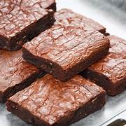
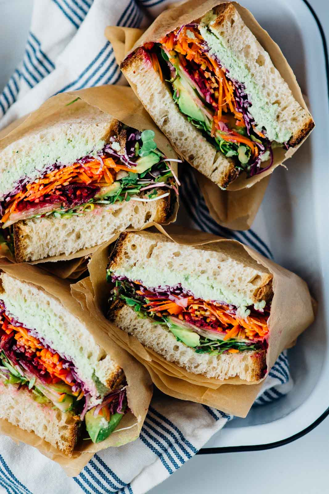

RECIPES TO TRY :)
MASALA CHAI
Ingredients
- Milk
- Ginger
- Tea leaves
- water
- Sugar
- Cinnamon sticks
- Cloves
- Green cardamom pods
- Black peppercorns
Steps
- Place a saucepan over high heat and add water. If you’re using a larger pan.
- Add an extra 1/4 cup water to account for the extra evaporation.
- Add the whole spices & ginger while the water is coming to a boil.
- Throw in the tea bags (or leaves) and reduce the heat to a simmer so the tea and spices have time to infuse the water.
- Stop and smell the aroma of the spices here.
- Add the milk and sugar. Once it comes to a boil, lower the heat and allow it to simmer for another 5 minutes or so.
- Raise the heat to high and allow it to come to a rolling boil for a minute or so, depending on how ‘cooked’ you like the milk.
- There is no right or wrong, it simply boils down to 😉 preference.
- Enjoy!
PAV BHAJI
Ingredients
- 450gms Mixed Vegetables (Potato, Cauliflower, Carrot, Beans, Capsicum)
- 2 tbsp oil
- 2 chopped onion
- 1 tsp ginger garlic paste
- 2 chopped tomatoes
- 50gms peas
- 2 chopped green chillies
- 0.5 tsp Turmeric Powder
- 1 tsp Red Chilli Powder
- 2 tsp Coriander Powder
- 1 tsp Cumin Powder
- 2 tbsp chopped Coriander Leaves
- 2 tbsp lime juice
- 1 tsp amchur powder
- salt as per your taste
Steps
- Boil the mixed vegetables along with peas, in a pressure cooker with 1 cup of water, for one whistle. Keep aside.
- Heat oil in a pan, add chopped onions and fry till they turn golden brown. Add ginger garlic paste and fry for 5 minutes.
Add tomatoes, green chillies, turmeric powder, chilli powder, coriander powder, cumin powder, and fry for a minute till
all the masalas are well combined.
- Add the vegetables along with the water, salt and mix well. Mash the vegetables well with a spoon.
Add the amchur powder and mix well.
- Add the remaining 1 cup water and simmer for 2 minutes to get a thick gravy. Remove from fire and add the
lime juice and mix well
- Garnish with coriander leaves and serve hot with Pav
- Enjoy!
CHICKEN BIRYANI

Ingredients
- 1 cup boiled basmati rice
- 1/2 teaspoon mint leaves
- salt as required
- 2 tablespoon refined oil
- 3 green cardamom
- 2 clove
- 2 onion
- 1 teaspoon turmeric
- 1 tablespoon garlic paste
- 1 cup hung curd
- 2 tablespoon coriander leaves
- water as required
- 1 tablespoon ghee
- 600 gm chicken
- 1 tablespoon garam masala powder
- 1 teaspoon saffron
- 1 tablespoon bay leaf
- 1 black cardamom
- 1 teaspoon cumin seeds
- 4 green chillies
- 1 tablespoon ginger paste
- 1 teaspoon red chilli powder
- 1/2 tablespoon ginger
- 2 drops kewra
- 1 tablespoon rose water
Steps
- To make a delightful chicken biryani dish, firstly soak saffron in water to prepare saffron water.
- Next, mix kewra drops in water and mix well to make kewra water.
- Set them aside for later usage. Now, chop the onion and coriander leaves and keep them aside.
- Meanwhile, heat refined oil in a deep bottomed pan. Once the oil is hot enough, add cumin seeds, bay leaf, green cardamom, black cardamom, cloves in it, and saute for about a minute.
- Then, add chopped onion to it and saute until pink. Now, add chicken into it with slit green chillies, turmeric, salt to taste, ginger-garlic paste, red chilli powder and green chilli paste.
- Mix well all the spices and cook for 2-3 minutes. Then, add hung curd into it and give a mix.
- Turn the flame to medium again and add garam masala in it along with ginger julienned, coriander and mint leaves.
- Add kewra water, rose water and 1 tsp saffron water in it. Cook till the chicken is tender. Then add 1 cup cooked rice and spread evenly.
- Then add the remaining saffron water and pour ghee over it.
- You can now cook the dish without the lid or cover it with a lid to give a dum-effect due to the steam formation.
- Cook for 15-20 minutes with a closed lid and garnish with 1 tbsp fried onions and coriander leaves.
- Serve hot chicken biryani with raita of your choice.
- Enjoy!
BROWNIE

Ingredients
- 8 oz good-quality chocolate(225 g), semi-sweet
- 12 tablespoons butter, melted
- 1 ¼ cups sugar(250 g)
- 2 eggs
- 2 teaspoons vanilla extract
- ¾ cup all-purpose flour(95 g)
- ¼ cup cocoa powder(30 g)
- 1 teaspoon salt
Steps
- Preheat the oven to 350°F (180°C). Line an 8-inch (20 cm) square baking dish with parchment paper.
- Chop the chocolate into chunks. Melt half of the chocolate in the microwave in 20-second intervals,
saving the other half for later.
- In a large bowl, mix the butter and sugar with an electric hand mixer, then beat
in the eggs and vanilla for 1-2 minutes, until the mixture becomes fluffy and light in color.
- Whisk in the melted chocolate (make sure it's not too hot or else the eggs will cook), then sift in the flour,
cocoa powder, and salt. Fold to incorporate the dry ingredients, being careful not to overmix as this will
cause the brownies to be more cake-like in texture.
- Fold in the chocolate chunks, then transfer the batter to the prepared baking dish.
- Bake for 20-25 minutes, depending on how fudgy you like your brownies, then cool completely.
- Enjoy!
CHEESY VEG SANDWICH

Ingredients
- 2 tbsp onions
- 2 tbsp capsicum
- 2 tbsp tomatoes
- 2 tbsp red & yellow bell pepper
- 2 tbsp boiled potato
- 2 green chillies
- 1 tbsp coriander leaves
- ¼ tsp chaat masala
- ¼ tsp black pepper powder
- 1 ½ tbsp mayonnaise
- 4 bread slices
- 2 cheese slices
- 1 tsp butter
- salt as per taste
Prep
- Finley chop the onions, capsicum, tomatoes and coriander leaves
- Finley slices the green chillies
- Boil and mash the potatoes
Steps
- In a large mixing bowl add the onions, capsicum, tomatoes, green chillies, coriander leaves, boiled and mashed
potato, salt, chaat masala and black pepper powder and mix well.
- Once mixed add the mayonnaise and mix the stuffing well.
- Take 2 slices of bread and generously apply the stuffing on both the slices of bread evenly.
- Place 1 cheese slice on top of one of the stuffing and land the other bread with the stuffing on,
on top of the cheese slice.
- Now apply butter on the top side of the bread
- Land the buttered side bread on the pan and cook till it turns golden brown in colour
- Then apply butter on the other slice of bread and cook this side as well till it turns golden in colour.
- Once both sides are grilled then remove them on a plate and cut diagonally and enjoy while it’s hot with
some tomato ketchup or some spicy green chutney.
- Enjoy!
PIZZA
Ingredients
- 2 cup all purpose flour
- 100 ml tomato ketchup
- 1 tomato
- 2 onion
- 1 teaspoon chilli flakes
- 1 teaspoon baking powder
- 1 teaspoon sugar
- 100 gm processed cheese
- 4 mushroom
- 1/2 capsicum (green pepper)
- 1 teaspoon oregano
- 1/2 cup mozzarella
- 1 tablespoon dry yeast
- water as required
Steps
- Take a dough kneading plate and add all-purpose flour to it. Next, add salt and baking powder in it and sieve the flour once.
- Then, make a well in the centre and add 1 teaspoon of oil to it. On the other hand, take a little warm water and mix the yeast in it along with 1 teaspoon of sugar.
- Mix well and keep aside for 10-15 minutes. The yeast will rise in the meantime. Once the yeast has risen, add it to the flour knead the dough nicely using some water.
- Keep this dough aside for 4-6 hours. Then knead the dough once again. Now, the pizza dough is ready.
- Preheat the oven at 180 degree Celsius. Now, is the time to make the pizza base when the dough is ready.
- Dust the space a little using dry flour and take a large amount of the pizza dough. Using a rolling pin, roll this dough into a nice circular base.
- Once you have made the base, use a fork and prick the base with it so that the base doesn't rise and gets baked nicely.
- Put it into the preheated oven and bake it 10 minutes. Now, your pizza base is ready.
- Now, wash the capsicum and slice it thinly in a bowl. Then, peel the onions and cut thin slices of it as well in another bowl.
- And finally, cut tomatoes and mushrooms in the same manner. However, make sure that those tomatoes have less juice in them.
- Once all the veggies are done, Now, grate the processed and mozzarella cheese in separate bowls.
- Then, take the fresh pizza base and apply tomato ketchup all over.
- Spread half the processed cheese all over the base and evenly put the veggies all across the base.
- Once you have put all the veggies, put a thick layer of mozzarella cheese.
- Put this pizza base in a baking tray and place it inside the oven. Let the pizza bake 10 minutes at 250 degree Celsius.
- Once done, take out the baking tray and slice the pizza. Sprinkle oregano and chilli flakes as per your taste and serve hot.
- Enjoy!